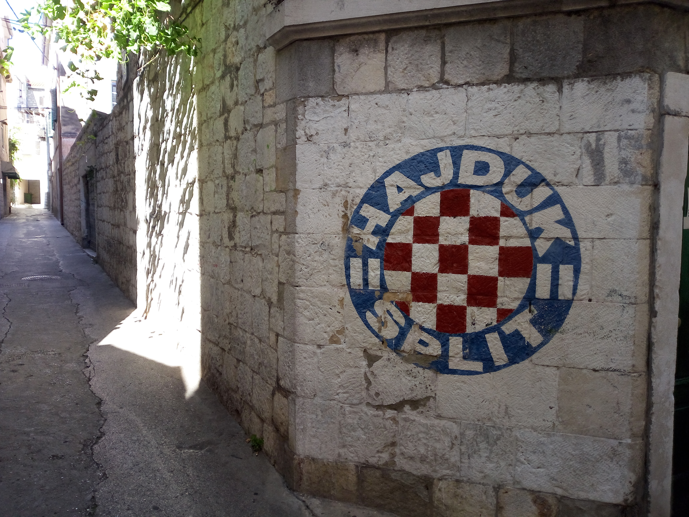

Split
Croatia · Dalmatian Coast · Adriatic Sea
Split is one of Croatia's most fascinating coastal cities, where
ancient history and contemporary Mediterranean life come together.
Located along the Adriatic Sea, the city is best known for
Diocletian's Palace, a remarkable Roman complex that has shaped
the heart of Split for centuries.
Beyond its historic centre, Split offers a beautiful waterfront,
lively squares, narrow stone streets, and a relaxed coastal
atmosphere. The combination of Roman heritage, Venetian influences,
traditional Dalmatian architecture, and everyday local life gives
the city a distinctive character.
Walking through its historic neighbourhoods and along the Riva
waterfront reveals different layers of the city's past and present.
These photographs capture my personal travel memories and
impressions of Split, a memorable destination on Croatia's
Adriatic coast.
My Photo Gallery
Explore my personal photographs and travel memories from Split, Croatia.
View All Photos ↗